Instruction Sets for Strangers I, II & III
My group and I created three site-specific public installations at our chosen location, the Whispering Gallery at the Grand Central Terminal. Through collaborative work between Dita Zanelli, Hongxi Chen, Natalie Alvarenga and Ruihan Xia, we as an artist’s group were able to create three unique and independent installation work that shares common purposes: catching eyes, satisfying people’s curiosity, urging busy New Yorkers to stop by and entertaining visitors and tourists from all over the world. Our goal is to create public art with no instruction provided, but still encourage strangers to interact with it.
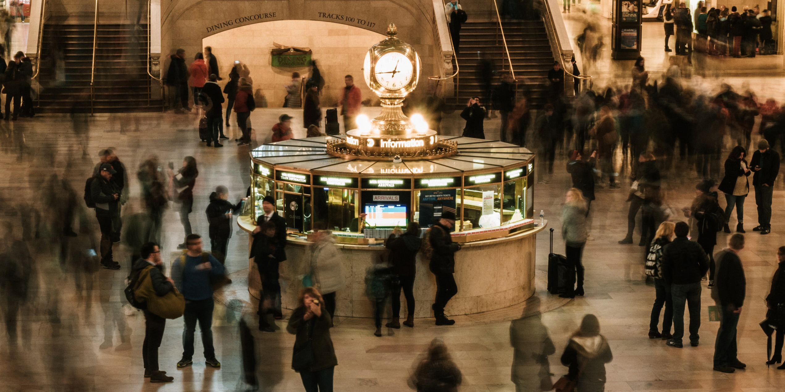"Aerial view photography of people" by Jorge Ramirez, Grand Central Terminal, New York
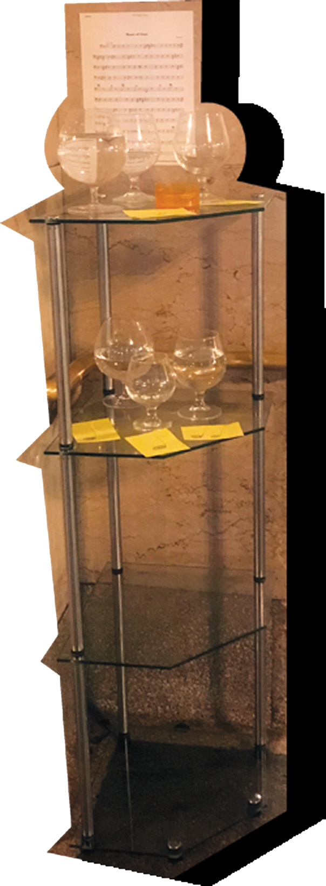 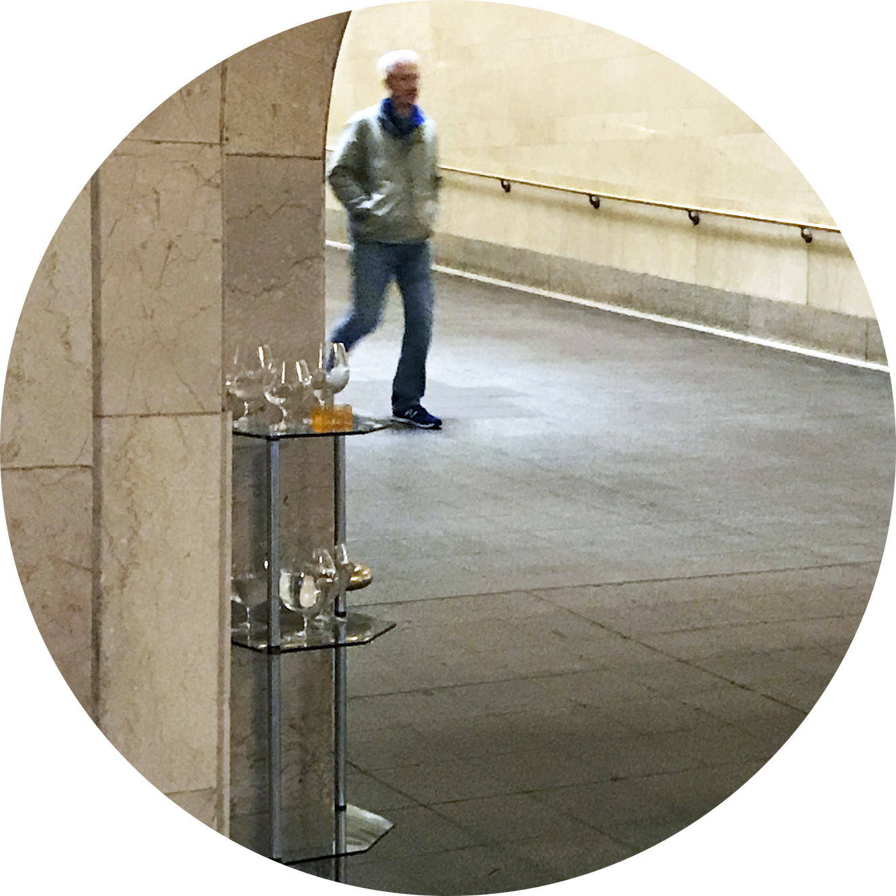 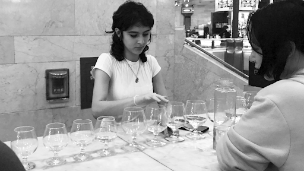

I
Mini Glass Harp
We explored the ancient idea of a glass harp, and created a mini version of it at the corner of the Whispering Gallery. Seven short stem wine glasses were used during the creation, giving passengers 7 different note to play with.

Research Poster
+
II & III
Ghost Projection


a Grand Terminal worker reacting to projection 1.
We took advantage on the Halloween season and decided to project a ghost gif collage to one of the dome inside the Whispering Gallery.
Since we got some good reaction towards our first ghost projection, we decided to roll with the same idea and create an upgraded version of the projection. This time, an actual ghost baby is made in collection with a ghost mom unity projection. In this project, the ghost mom will urge the passengers to stop and listen to what she to have to say. The ghost mom wants the passengers to find her baby (the ghost baby), and to take a reward (a candy from the candy bucket) as a “FOUND” reward and a Halloween treat.
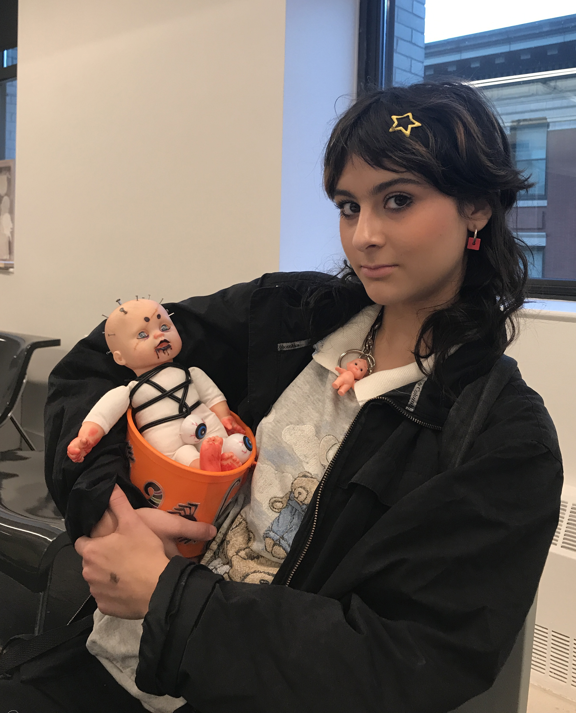 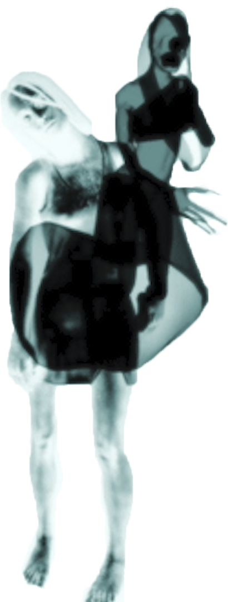
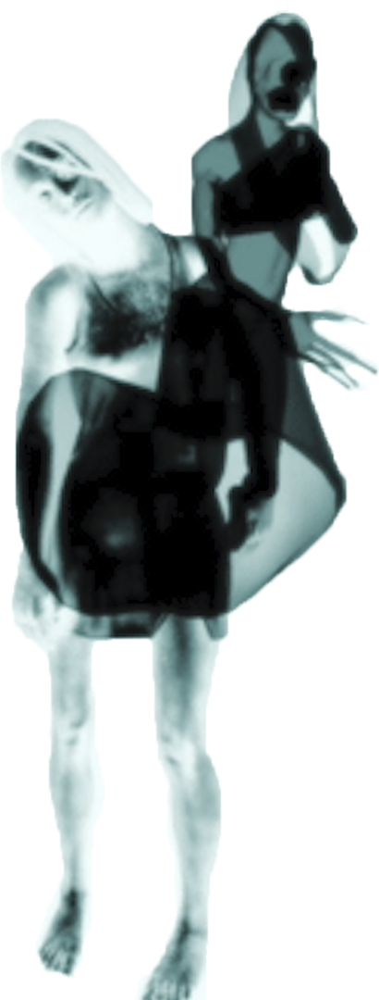
 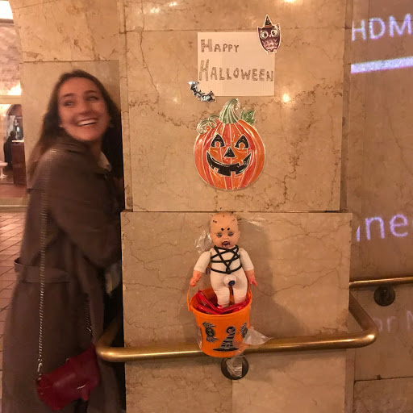
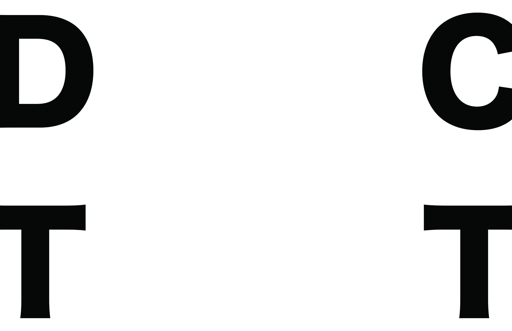
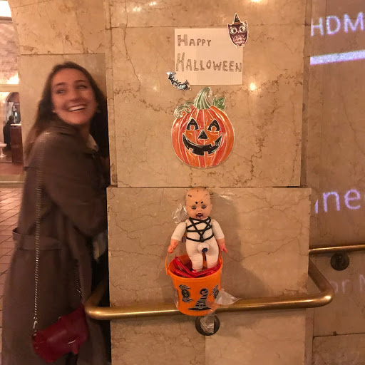
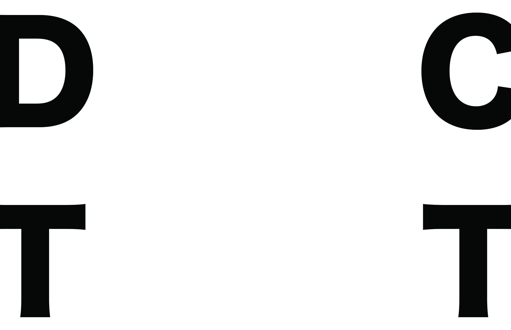